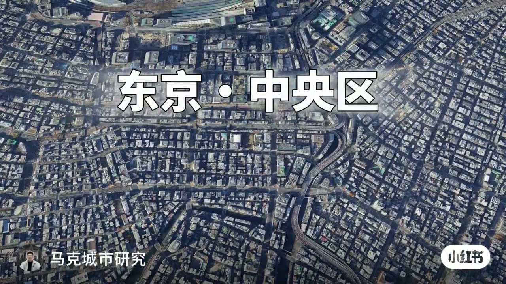
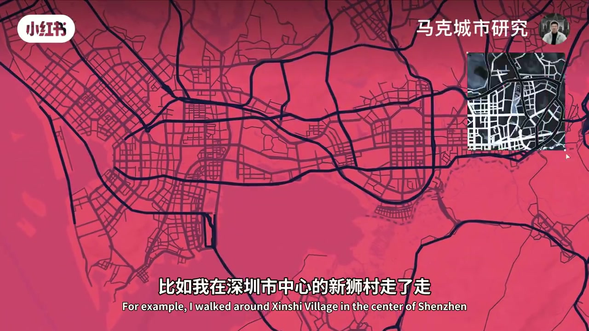
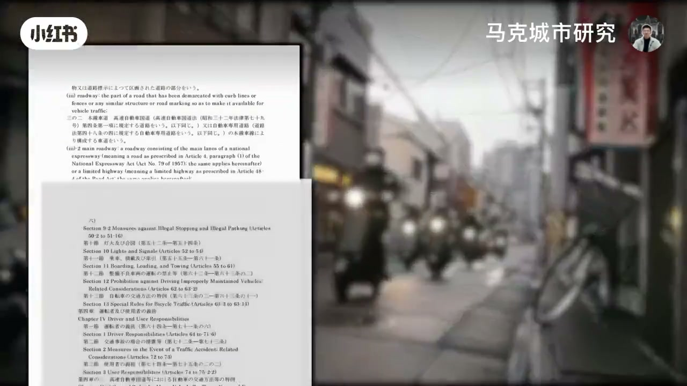
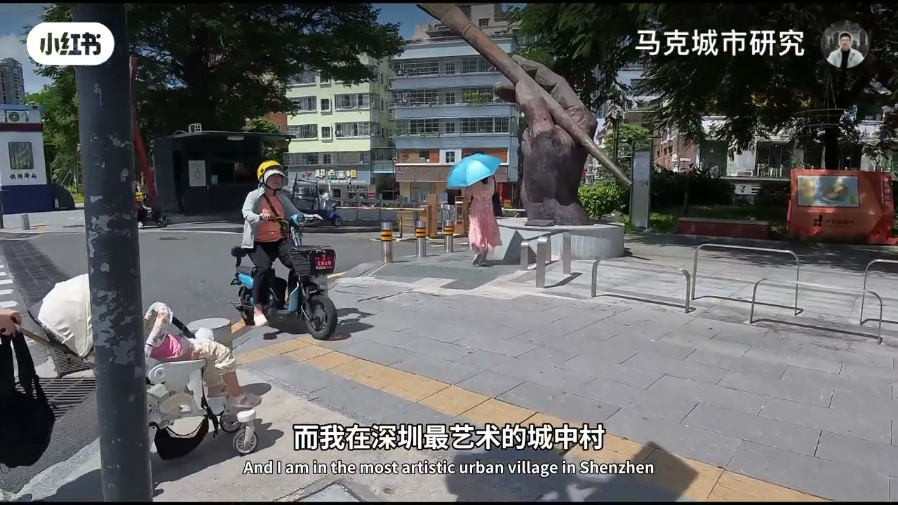
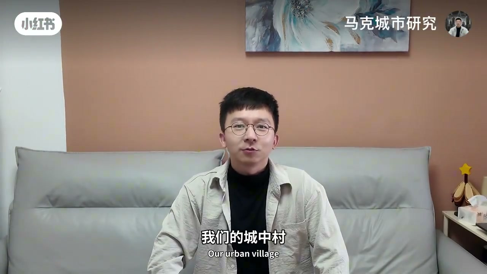
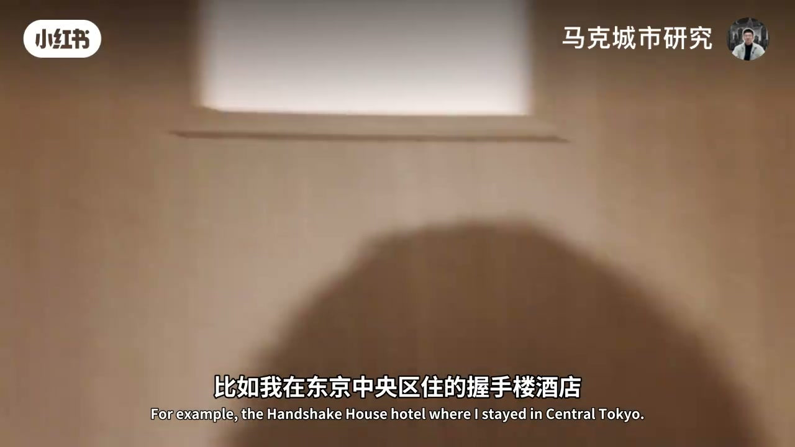
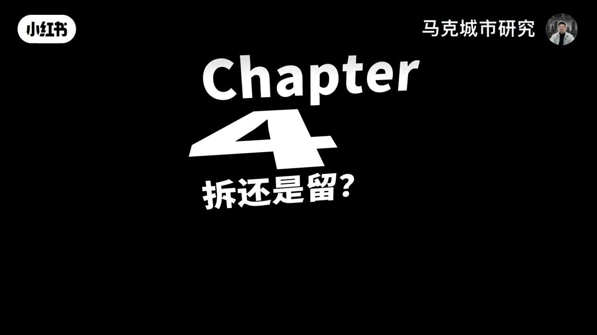
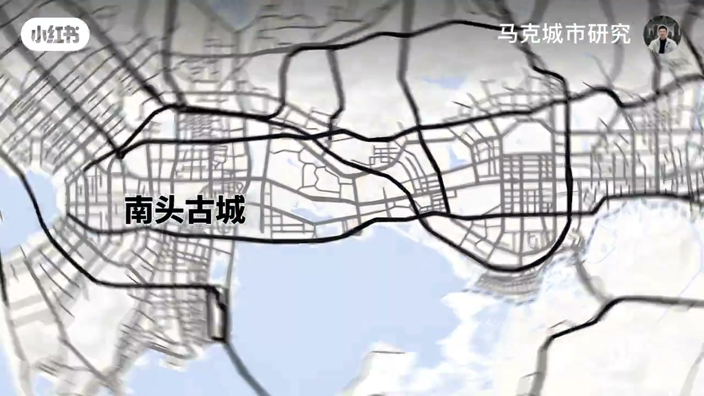
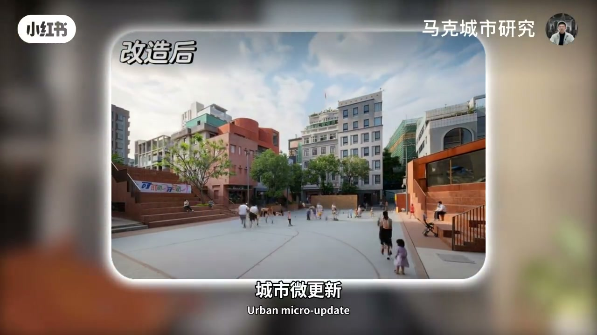

内容要点
一支 4.7 分钟的城市研究视频：从「东京市中心的握手楼像中国城中村」切入，追问为什么东京把它当常态、我们却总想拆迁更新。作者结合东京与深圳的实地体验，梳理日本优化城中村的四类手段——道路与电动车管理、电线杆与材质配色、防盗网与建筑细节、窗外绿植与天井等小巧思；再对照深圳大芬油画村与南头古城，最后给出结论：城中村面积太大、全拆不现实，不如用城市微更新和艺术介入一点点优化细节。
知识结构
东京市中心无绿化、楼宇密集的握手楼是常态，对我们却是城市之痛、总想拆迁更新——为什么？本期结合实地体验找答案。
日本道路窄但单车杂物严格摆路边、留出步行空间；深圳城中村停满电动车只留不到60%路面；日本电动车法案限宽60公分、限速20公里/小时。
日本电线杆出名乱但城市小道感觉和谐，关键是材质和配色统一；清水市俯瞰一片握手楼，黑白灰低饱和、与电线同色系、外立面材质统一。
大芬油画村单栋都可以，材质配色广告汽车混一起就不艺术；大量不锈钢防盗网防盗好但影响颜色，拆掉后与东京高级公寓差不多。
东京中央区握手楼酒店窗外种绿植、窗户设计成柜本状；一户建小天井；对比楼间距都差不多，但深圳少了几条路，加路是微更新好主意。
深圳城中村分布图显示核心片区外基本被城中村占领，有些村面积占一半；全拆不可能；南头古城保留握手楼、改造外立面，成为微更新和艺术介入的示范。
大量违建、楼间距狭窄的城中村已无法改变，大拆大建道阻且长；不如用道路整理、材质配色统一、细节小巧思、微更新和艺术介入，一点一点优化城市细节——「城中村没有阳光，但我们可以创造光」。
00:00-00:25为什么总想拆迁更新
00:00视频开篇从东京切入：市中心没有一点绿化，楼与楼之间超级密集——这不就是中国的城中村吗？但这种握手楼在东京是常态，对我们来说却是「城市之痛」，总想着拆迁来更新。作者提出本期要结合实地体验，展示日本是如何优化他们的城中村、有哪些有趣的地方值得探索。

00:31-01:25道路与电动车：步行空间之争
00:31首先以东京为例：他们的道路非常窄，可能还不如我们的城中村，但是单车和杂物都严格摆放在路边，给行人留出空间。作者点出核心矛盾：我们享受了电动车带来的便利，却失去了步行的体验。
00:44比如作者在深圳市中心一处较好的城中村走了走，还是停满电动车——这些电动车只给道路留了不到 60% 的空间，让本应宽敞的道路显得局促。作为对比，把日本的道路也摆满电动车，结果一样，步行体验极差。

00:67日本有严格的电动车法案：不仅对速度有要求，长宽高也做了限制——最宽限制在 60 公分，比我们的车短 10 到 20 公分；最高时速限制在 20 公里每小时，比我们的新国标还慢，更是只有苏炳添一半的速度。

01:26-02:15电线杆与配色：和谐的密码
00:86日本的电线杆是出了名的乱，大量电线落在路面上，但走在城市小道上却感觉没那么混乱，甚至还有一丝和谐——作者给出的重要原因是材质和配色的选择。
00:113比如樱桃小丸子的家乡清水市：作者坐上小丸子坐过的摩天轮俯瞰全市，俨然一片握手楼，甚至比不上中国五线城市的整齐，但颜色基本都是黑白灰和低饱和，跟电线杆和电线是同一个色系，外立面材质也比较统一，所以看上去就协调。
02:15-02:55深圳对比：油画村与防盗网
00:135回到深圳：作者去了最艺术的城中村大芬油画村。其实每栋楼单拎出来都还可以，但不同材质配色放在一起，加上诸多广告和汽车，就有些不那么艺术了。

00:145另外由于历史原因，我们的城中村加装了大量不锈钢防盗网。这种防盗网确实起到了很好的防盗效果，但也太影响颜色。作者设想：如果把村房的不锈钢拆掉，其实和东京那些高级公寓也差不多。

02:55-03:33小巧思优化生活
00:175最后，一些小巧思也能优化握手楼生活。比如作者在东京中央区住的握手楼酒店：他们在窗外种上绿植，然后把窗户设计成柜本状，让人忘记窗后其实也是一堵墙。

00:189还有东京大田区朋友家一户建的小天井。同样尺度下把东京和深圳的城中村放在一起对比，会发现楼间距其实都差不多，但深圳少了几条路——也许把路加上，是我们城中村更新的好主意，但实施起来想必麻烦巨大。
03:39-04:27分布图与南头古城示范
00:219这是一张深圳城中村分布图：可以清晰地看到，除了核心片区，基本都为城中村所占领。如果把城中村面积除以建成区面积，会发现有些村的村面积甚至占了一半——想要靠全拆来完成城市更新，基本不太可能。

00:237所以南头古城做了一个改造的示范：在保留握手楼的同时，又进行了外立面的改造。走在南头古城的道路中，几乎没有城中村的感觉；飞起来看，更有一种特色的和谐。尽管它不是村民自发的改造，但通过政府和开发商主导的城市微更新和艺术介入，的确让一个脏乱差的城中村成为城市亮点，甚至成为热门旅游景点。


04:29-04:43结论：创造光
00:269总之，大量违建、楼间距狭窄的城中村已经无法改变，大拆大建又道阻且长——不如一点一点优化城市的细节，让城中村变得更美。视频以一句话收束：「城中村没有阳光，但我们可以创造光。」